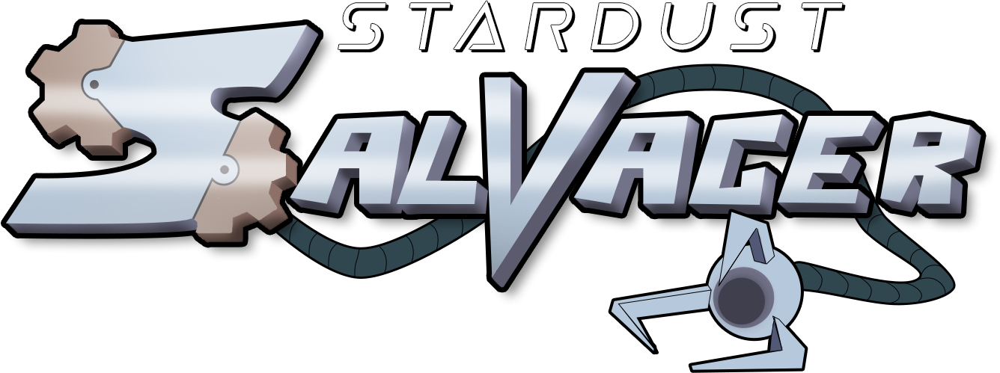

Stardust Salvager is a Sci-Fi 3D Platformer game, heavily inspired by PS1-era games.
As a member of an alien scrap-salvaging crew, you descend to different planets to salvage valuable resources to make ends meet.
This prototype was my final year project at the Ulster University Games Design course.
I wrote about developing the game's art style and mechanics here if you're interested!